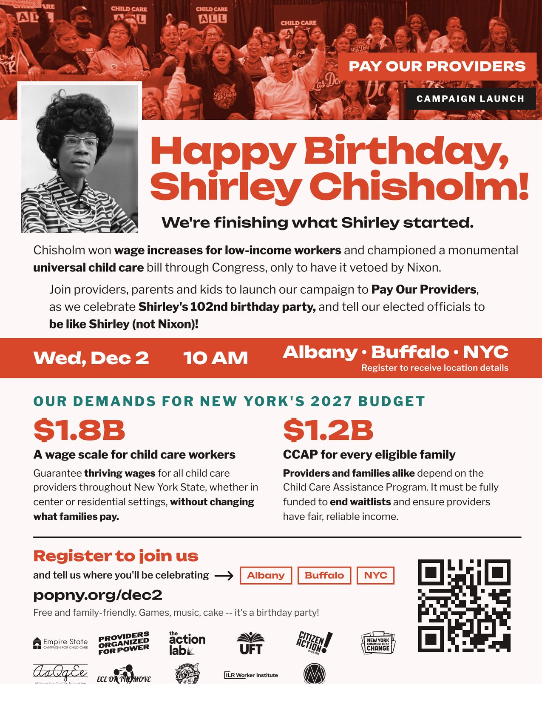
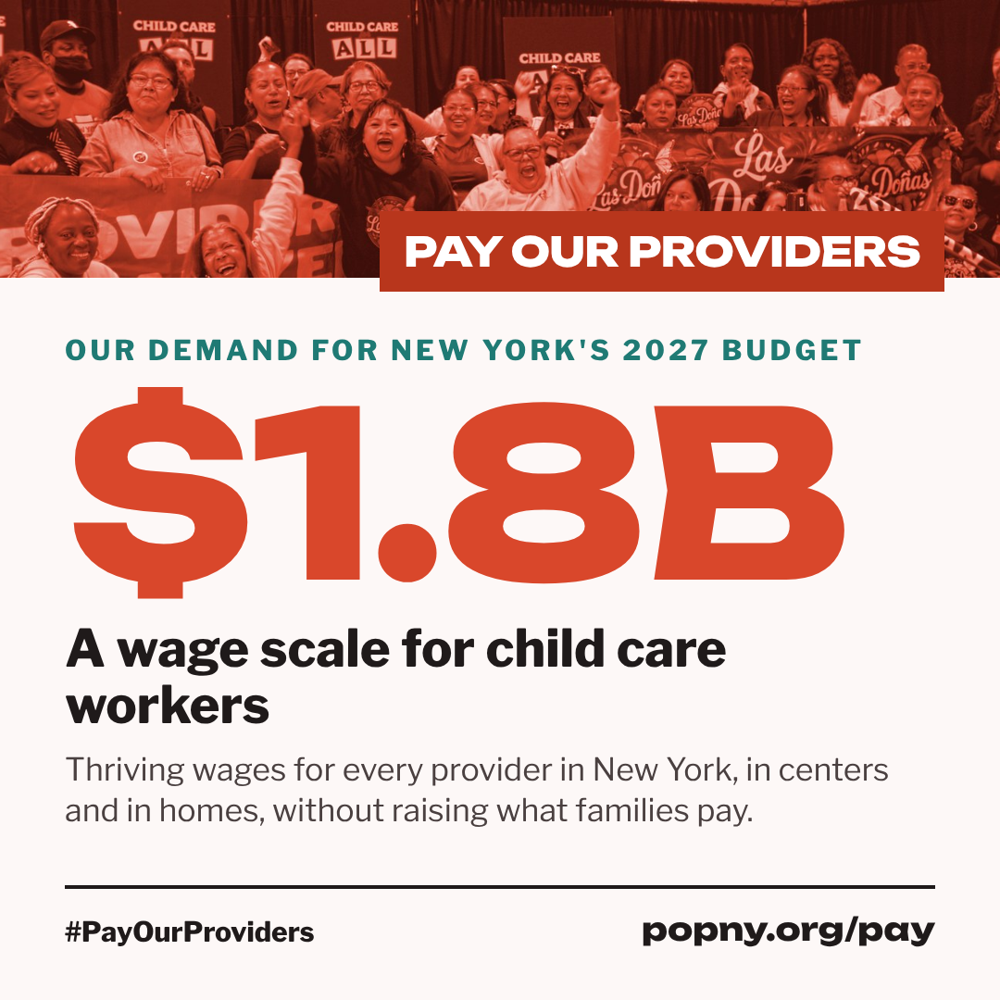
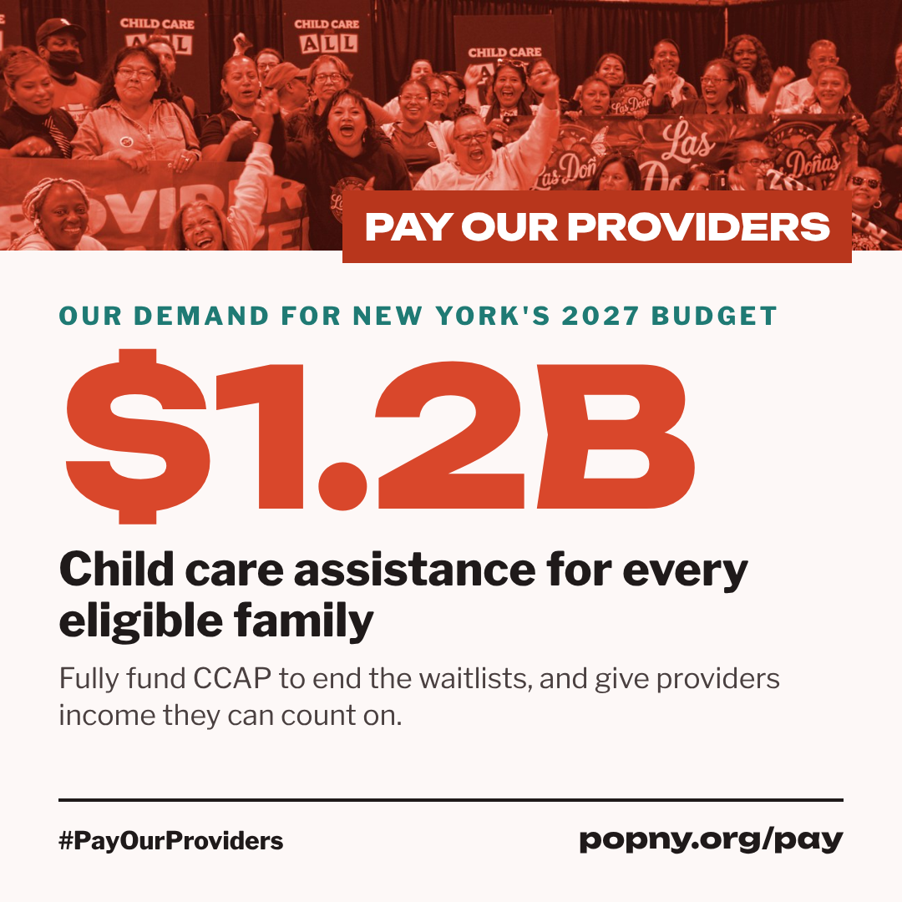
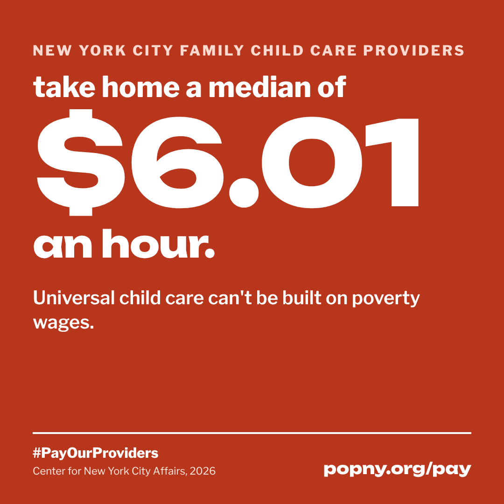
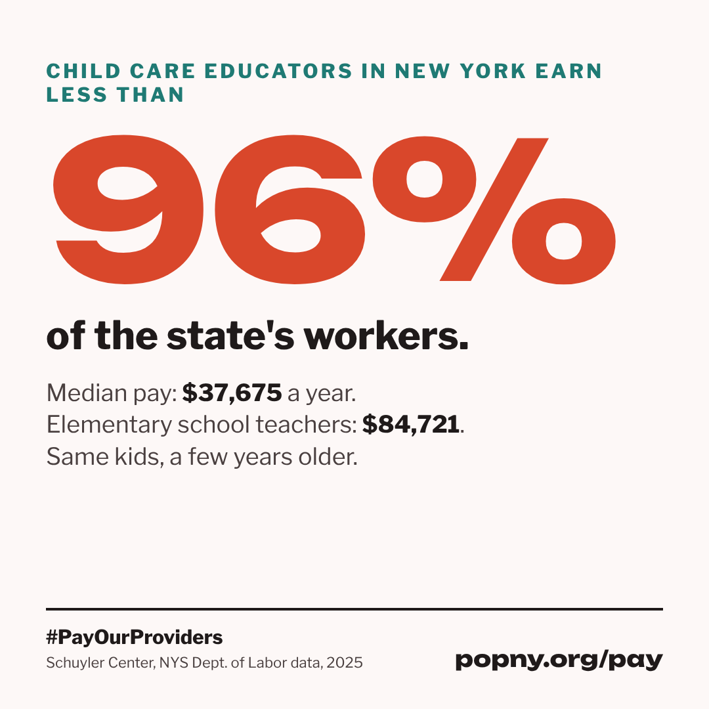
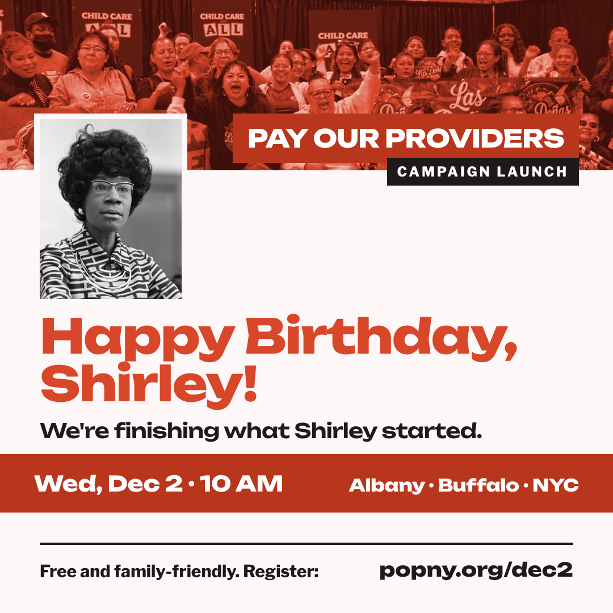
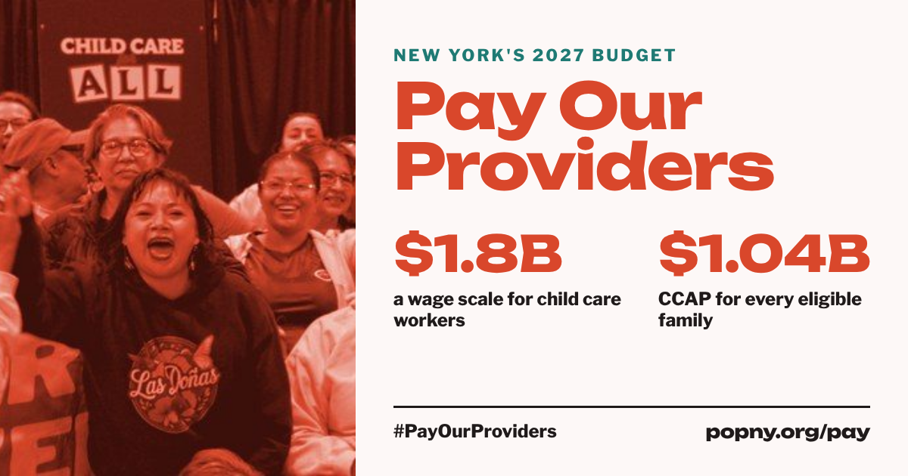

Spread the word.
Everything you need to bring Pay Our Providers to your feed, your legislator's office, your fellow providers and the families you serve. Download, share and print freely.
Wed, Dec 2 · 10 AM · Albany · Buffalo · NYC
Launch flyer

Celebrate Shirley Chisholm's 102nd birthday and launch the campaign with providers, parents and kids. The flyer's QR code goes straight to registration at popny.org/dec2.
Print it for your program's front door, hand it out at pickup, or send it to your group chats.

See the full campaign.
The need, the solution, our champions and endorsers are all at popny.org/pay.
Instagram · Facebook · X · WhatsApp
Social media kit
Download a graphic, copy the caption in English or Spanish, and post. Tag your legislators and use the campaign hashtag.
#PayOurProviders#ChildCareForAllpopny.org/pay
The wage scale demand
New York's child care providers make every other job possible, yet they earn less than 96% of the state's workers. We're calling for a $1.8B wage scale so every provider, in centers and in homes, earns a thriving wage without raising what families pay. #PayOurProviders popny.org/pay
Las proveedoras de cuidado infantil hacen posible todos los demás trabajos en Nueva York, pero ganan menos que el 96% de los trabajadores del estado. Exigimos una escala salarial de $1.8B para que cada proveedora, en centros y en casas, gane un salario digno sin aumentar lo que pagan las familias. #PayOurProviders popny.org/pay

The CCAP demand
Thousands of New York families are stuck on waitlists for child care assistance, and providers can't count on steady income. Fully funding CCAP with $1.2B means no eligible family is turned away. #PayOurProviders popny.org/pay
Miles de familias en Nueva York están en listas de espera para recibir asistencia de cuidado infantil, y las proveedoras no pueden contar con ingresos estables. Financiar CCAP por completo con $1.2B significa que ninguna familia elegible sea rechazada. #PayOurProviders popny.org/pay

$6.01 an hour
$6.01 an hour. That's the median take-home pay of New York City's home-based child care providers, according to the Center for New York City Affairs. Universal child care can't be built on poverty wages. #PayOurProviders popny.org/pay
$6.01 por hora. Esa es la mediana de lo que se llevan a casa las proveedoras de cuidado infantil en casa de la Ciudad de Nueva York, según el Center for New York City Affairs. El cuidado infantil universal no se puede construir con salarios de pobreza. #PayOurProviders popny.org/pay

Less than 96% of workers
Child care educators in New York earn less than 96% of the state's workers: a median of $37,675 a year, compared with $84,721 for elementary school teachers. Same kids, a few years older. #PayOurProviders popny.org/pay
Las educadoras de cuidado infantil en Nueva York ganan menos que el 96% de los trabajadores del estado: una mediana de $37,675 al año, frente a $84,721 de las maestras de primaria. Los mismos niños, unos años mayores. #PayOurProviders popny.org/pay

Dec 2 launch invite
Join providers, parents and kids on Wed, Dec 2 at 10 AM in Albany, Buffalo and NYC as we launch the campaign to Pay Our Providers and celebrate Shirley Chisholm's 102nd birthday. Free and family-friendly. Register: popny.org/dec2 #PayOurProviders
Únete a proveedoras, familias y niños el miércoles 2 de diciembre a las 10 AM en Albany, Buffalo y NYC para lanzar la campaña Pay Our Providers y celebrar el cumpleaños 102 de Shirley Chisholm. Gratis y para toda la familia. Regístrate: popny.org/dec2 #PayOurProviders

Link banner (Facebook, X, email)
Child care is the work that makes all other work possible. It's time New York paid providers like it. Two demands for the 2027 budget: a $1.8B wage scale and $1.2B for child care assistance. #PayOurProviders popny.org/pay
El cuidado infantil es el trabajo que hace posible todos los demás. Es hora de que Nueva York les pague a las proveedoras como se merecen. Dos demandas para el presupuesto 2027: una escala salarial de $1.8B y $1.2B para la asistencia de cuidado infantil. #PayOurProviders popny.org/pay